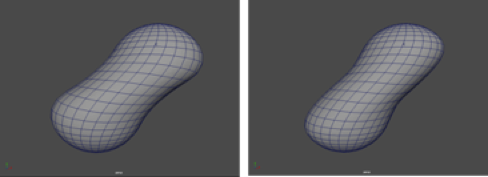
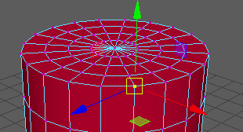
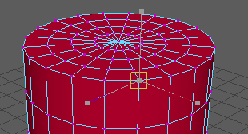
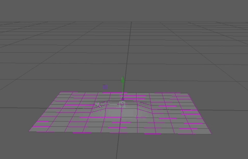

- 在“动画”(Animation)、“建模”(Modeling)和“绑定”(Rigging)菜单集中：“变形 > (创建)张力”(Deform > (Create) Tension) >

- “基本”(Basic)选项卡
-
- 平滑迭代次数(Smoothing iterations)
-
用于设置平滑算法的运行次数。如果为“平滑迭代次数”(Smoothing Iterations)设置较大的数字，顶点接收到的平滑数量也会增加，从而提供更好的结果。但是，平滑算法运行的次数越多，处理效果所需的时间就越长。默认迭代次数值为 10。
- 平滑步长(Smoothing step)
- 指定每次平滑迭代使用的平滑步长。与较低的值相比，较高的值可能会导致不稳定，但是收敛更快。
- 固定边界顶点(Pin border vertices)
- pinBorderVertices 属性指定网格外侧的顶点不在张力变形器的效果内，因此用作张力变形的锚点。
注： 创建张力变形器时未选择的顶点也被固定。这意味着与张力变形器影响的顶点相邻的顶点用作锚点。
- 相对(Relative)
- 默认情况下，张力变形器工作时将保留原始边长度（默认设置为 0.0）。在“相对”(Relative)处于启用状态，它会保持连接某个特定顶点的所有边的相对长度。这意味着，如果均匀放大或缩小网格且“相对”(Relative)设置为 1.0（完整值），则张力变形器没有效果。
- 向内约束(Inward Constraint)/向外约束(Outward Constraint)
-
注： 此设置仅显示在“属性编辑器”(Attribute Editor)的“张力”(Tension)窗格中，而不显示在“选项”(Options)窗口中。
- inwardConstraint 和 outwardConstraint 属性限制变形曲面上的顶点运动。inwardConstraint 会停止向曲面内部的顶点移动，而 outwardConstraint 会停止向曲面外部的顶点移动以保留当前几何体轮廓。

- 挤压约束(Squash Constraint)/拉伸约束(Stretch Constraint)
-
注： 此设置仅显示在“属性编辑器”(Attribute Editor)的“张力”(Tension)窗格中，而不显示在“选项”(Options)窗口中。
- “挤压约束”(Squash Constraint)和“拉伸约束”(Stretch Constraint)控制张力变形器尝试防止挤压和拉伸几何体的程度。可以调低“挤压约束”(Squash Constraint)以避免曲面屈曲，但不建议将“拉伸约束”(Stretch Constraint)调低为 0.0，因为将拉伸和挤压同时设置为 0.0 实际上会禁用变形器。（大多数情况下，拉伸应保持为 1.0。）
- 挤压约束会自动创建褶皱。

挤压设置为 0
挤压设置为 1
- 斜切约束(Shear Constraint)/弯曲约束(Bend Constraint)
-
注： 此设置仅显示在“属性编辑器”(Attribute Editor)的“张力”(Tension)窗格中，而不显示在“选项”(Options)窗口中。
- shearStrength 和 bendStrength 属性控制使用斜切和弯曲连接（相对于主边连接）的力的强度。斜切连接是通过将一个面上每个顶点连接到其他顶点以保持面的曲面区域形成的。弯曲连接是通过连接额外一个级别的原始边连接来为曲面提供一些额外刚度形成的。
- 弯曲值越高，蒙皮越硬。

- “高级”(Advanced)选项卡
-
- 变形顺序(Deformation order)
- 指定按可变形对象的变形顺序放置变形器。放置会影响变形器的效果和性能。
默认(Default) 通常，Maya 在紧挨着变形形状之前的位置放置变形器（作为输入）。
除非变形器将要对没有历史的形状节点执行操作，否则此选项与“之前”(Before)效果相同。在这种情况下，顺序将与“之后”(After)相同。
使用“默认”(Default)选项为对象创建大量变形器时，变形链的顺序将与创建变形器的顺序相同。
之前(Before) Maya 在紧挨着可变形对象的变形形状之前的位置放置变形器。在对象的历史中，变形器将在变形形状之前即刻放置。“默认”(Default)通常提供这种放置类型。
之后(After) Maya 在可变形对象之后即刻放置变形器。您可以使用“之后”(After)在对象历史当中的某处创建中间变形形状。使用“之后”(After)，对象的原始形状不会隐藏。
分割(Split) Maya 将变形分割为两个变形链。可以使用“分割”(Split)同时以两种方式使对象变形，从而创建源自同一原始形状的两个最终形状。
平行(Parallel) 在对象历史中，Maya 将变形器与现有输入节点平行放置，然后融合现有输入节点和变形器所提供的效果。在最终形状之前放置融合现有输入节点和新变形器效果的平行融合器节点（默认名称：parallelBlendern）。
parallelBlender 节点为每个变形器提供了一个权重通道，您可以对其进行编辑。
- 排除(Exclusive)
-
指定变形器集是否位于某个划分中。划分中的集不能有重叠的成员。如果启用，“要使用的划分”(Partition To Use)和“划分名称”(Partition Name)选项将变为可用。默认设置为禁用。
- 要使用的划分(Partition to use)
-
列出所有现有划分和默认选择“新建划分”(New Partition)。如果选择“新建划分”(New Partition)，则可以编辑“划分名称”(Partition Name)字段，以指定新划分的名称。（在“排除”(Exclusive)处于启用状态时可用。）
- 划分名称(Partition Name)
-
指定将包括变形器集的新划分的名称。建议的划分名称为 deformPartition，如果尚不存在，则将创建该名称。通常，可能会将所有排除式变形器集置于名为 deformPartition 的划分中。但是，可以根据需要创建多个划分并为这些划分命名。仅当“排除”(Exclusive)处于启用状态时才可用。